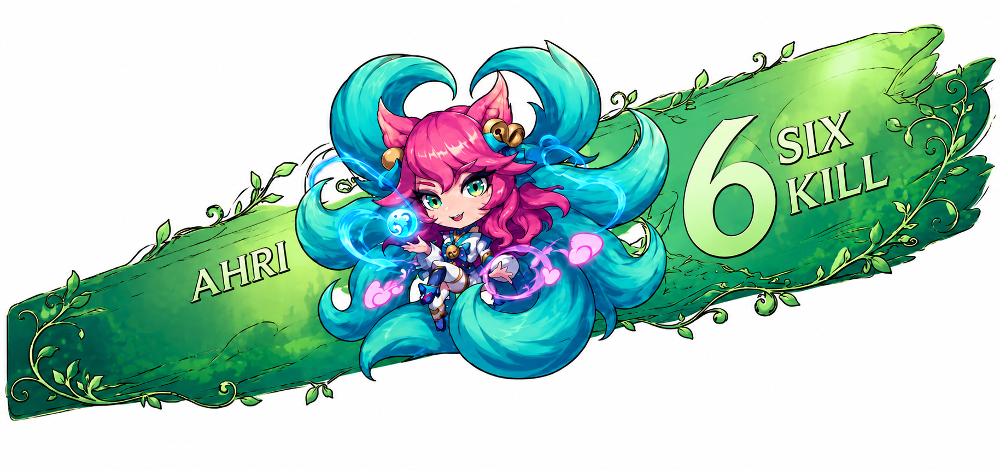
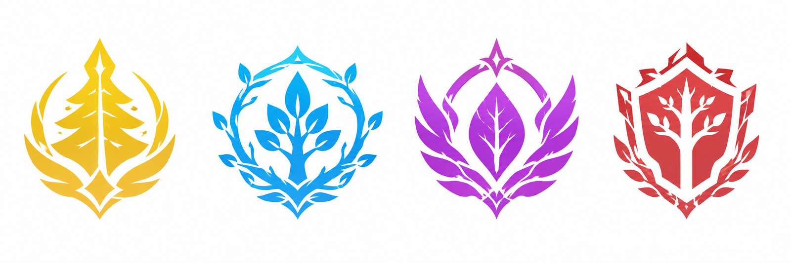
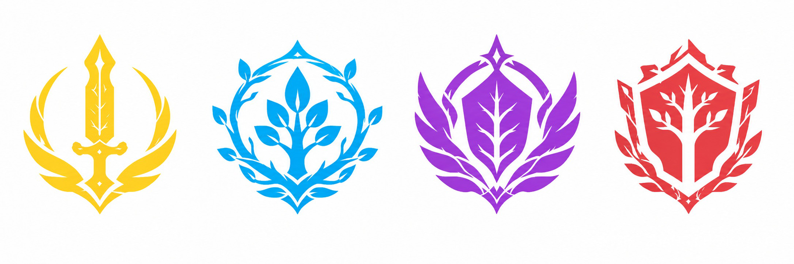
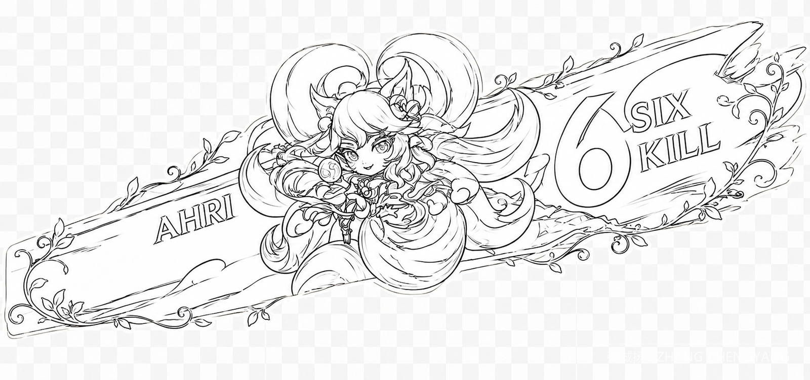
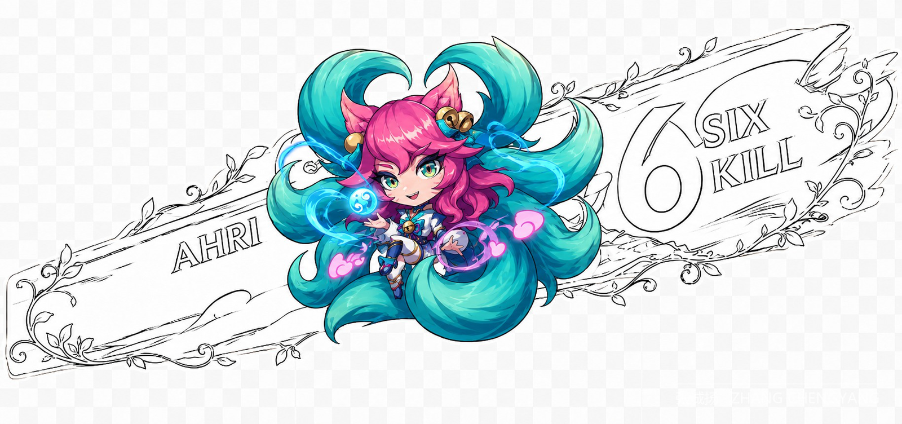
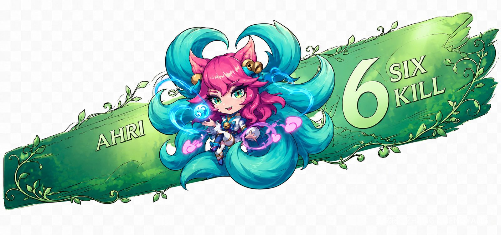
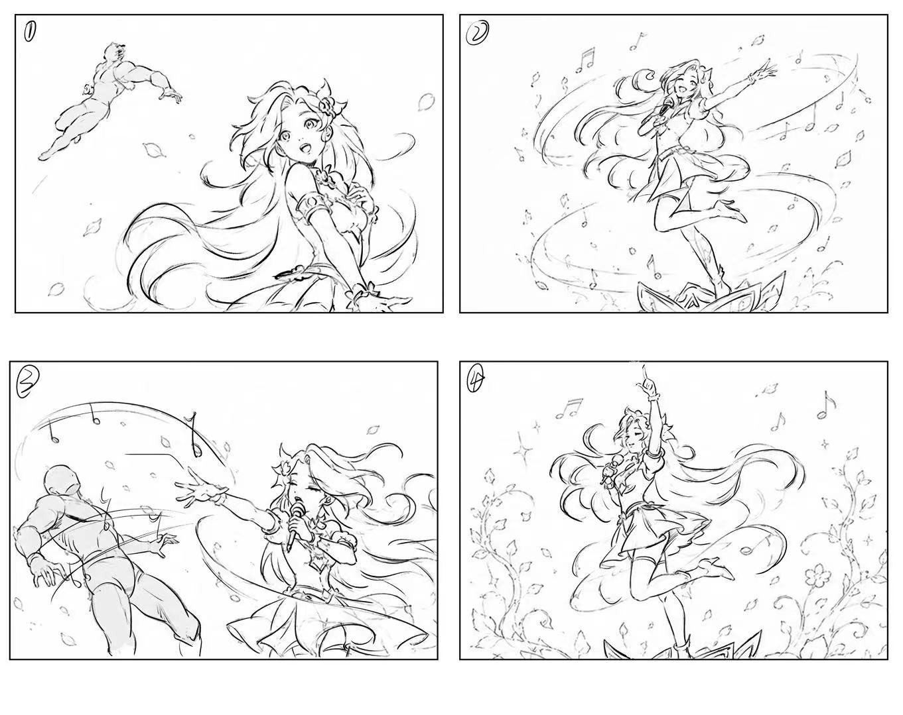
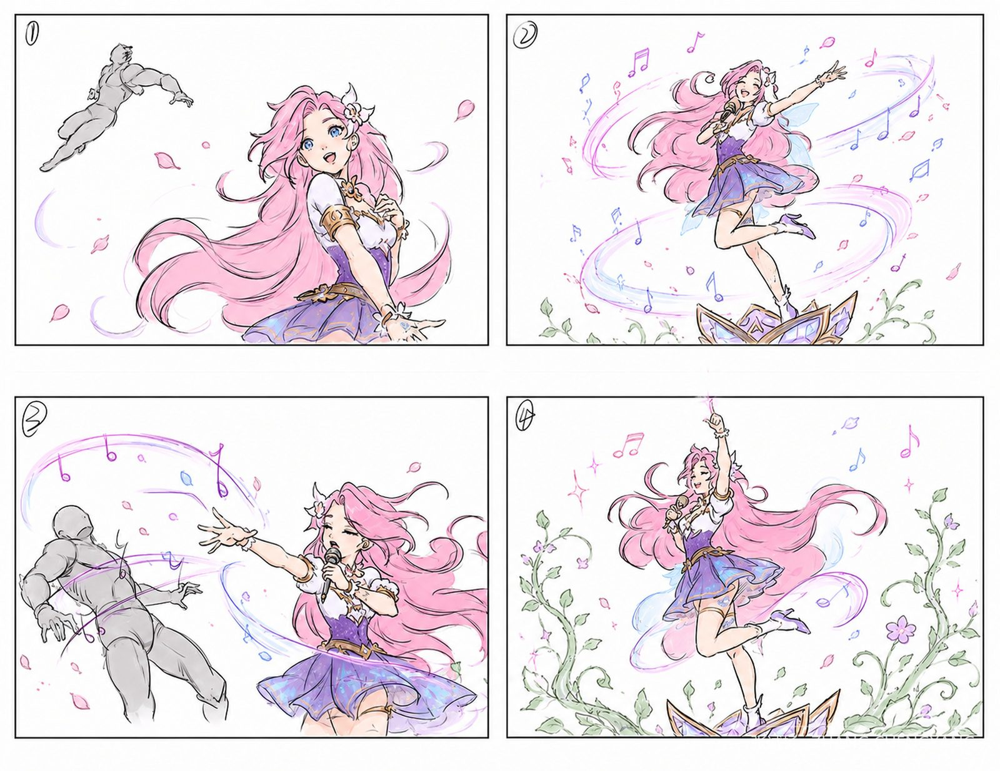

腾讯游戏 / 英雄播报 UI
金铲铲之战
TEAMFIGHT TACTICS

腾讯游戏 · 金铲铲之战
01 · Overview
英雄播报UI 设计
参与《金铲铲之战》森林主题播报条与击杀反馈设计，聚焦击杀、胜利、失败等即时战斗结果的 UI 信息传达与情绪反馈，在 1-2 秒内帮助玩家快速识别结果，兼顾视觉冲击与功能清晰度。
02 · Concept
概念设计
VISUAL CONCEPT
通过竞品调研和内部素材分析，提炼森林、藤蔓、花朵、晶体、音符等视觉关键词，将播报条拆解为四大层级，以玩家认知流程为导向，确定横向构图、色彩分配和视觉流向。
森林藤蔓花朵晶体音符
角色视觉中心认知焦点
背景氛围情绪底色
击杀信息区信息层级
装饰引导线视觉流向

森林主题徽章 · 方案一
徽章方案 · 对比迭代



四格动画分镜 · 登场 — 蓄力 — 攻击命中 — 胜利收束03 · Execution
方案执行
DESIGN EXECUTION
使用 Procreate 完成多版静态线稿与上色方案，采用「高饱和角色 + 低饱和背景」策略解决色彩融合问题；同时设计四格动画分镜，通过角色姿态、音符轨迹、光环方向的变化，构建完整的击杀反馈节奏，输出可落地的动效脚本。
登场蓄力攻击命中胜利收束
04 · Delivery
迭代交付
ITERATION & DELIVERY
依据导师及同事反馈，快速迭代优化构图、文字可读性、主题装饰密度与动效逻辑，最终交付播报条设计方案、上色示意、动画分镜及详细设计说明，为后续视觉深化和动效制作提供清晰依据。
播报条设计方案上色示意动画分镜详细设计说明
方案获得项目组认可

最终交付 · 播报条与徽章汇总